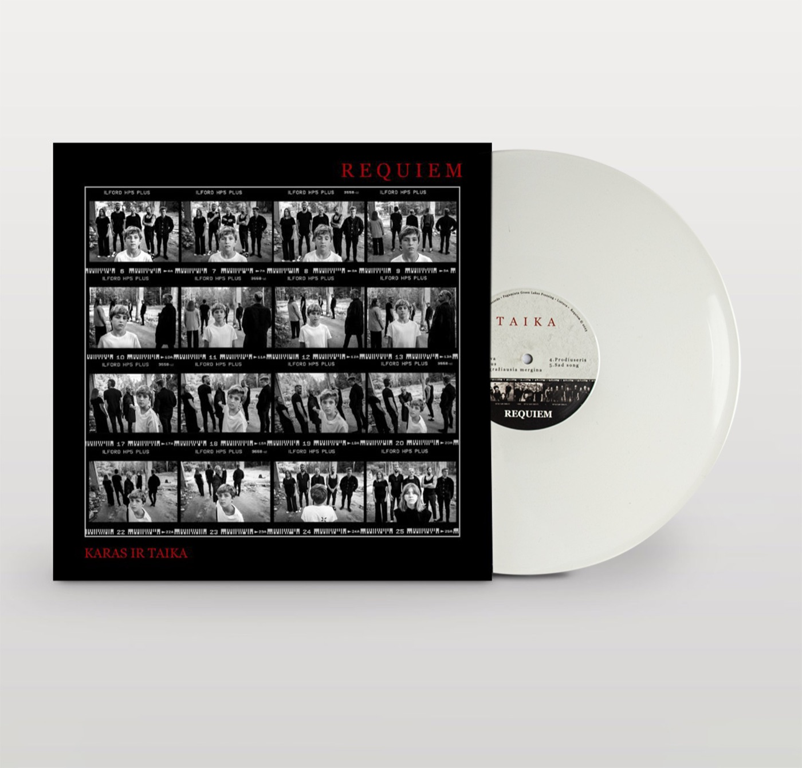

Karas ir Taika
"War and Peace", a new album split into a War side and a Peace side. I was its art department and back office at once: I arranged the photoshoot with photographer T. Terekas, designed the cover, gatefold and centre labels around its contact sheet of film photos, then took it all the way to the Green Lakes Pressing vinyl factory and onto the merch table.
Read more
Behind the artwork sat everything else a record needs: print-ready files, proofs and pressing deadlines with the factory, the budget and a LATGA grant I secured, contracts and 300 hand-numbered copies. I also made sure the audio arrived in the right shape, arranging masters from sound engineer Pavel Daniels to the technical standards of both vinyl cutting and CD replication.
The album also came out on CD, with 500 copies produced in the Netherlands.
I opened a pre-sale on the band's website and arranged a five-concert tour around the release, in Vilnius, Kaunas, Klaipėda, Alytus and Ukmergė. The vinyl edition is now nearly sold out, and a second pressing is planned for the near future.
- My rolePhotoshoot · design · production · tour
- Pressed byGreen Lakes Pressing
- Vinyl300 numbered · 60 white · 240 black
- CD500 copies · made in the Netherlands
- Release tour5 concerts
- StatusNearly sold out · 2nd press planned